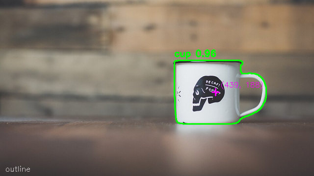

RobotHand
A robot hand that looks at an object, finds its outline, and works out where each finger should touch it.
What it does
One 2D image in, finger servo angles out, for the open-source Amazing Hand by Pollen Robotics.
1camera image, no depth
8 pxgrip search step
0.5friction coefficient
2servo angles per finger



How it works
- DetectYOLOE finds the object's box; labels ignored
- OutlineGrabCut or edges inside the box, holes kept
- ScoreGrips tried along the outline, ranked by force balance
- SolveInverse kinematics gives each finger's servo angles
- GraspSpace saves it, holds 1 s, then closes the fingers
Status
TESTED
Vision and planning, on photos
Vision and planning, on photos
TESTED
Grasps in a MuJoCo simulation
Grasps in a MuJoCo simulation
NOT RUN
Real hand: hands are on order, driver never run on hardware
Real hand: hands are on order, driver never run on hardware
UNFINISHED
Finger CAD and PCB; project moved to code
Finger CAD and PCB; project moved to code
Simulation uses Pollen's hand model only, so finger geometry is not measured on a real hand. Results come from small samples.
Full numbers and failures are in the decision logs in the repository.